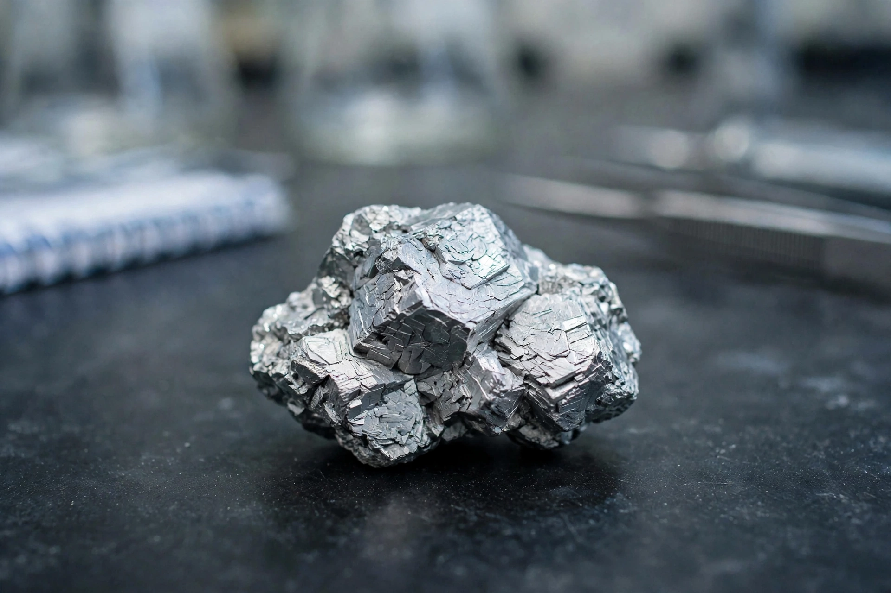

Germanium
| Germanium | |
|---|---|
| Symbol / atomic number | Ge / 32 |
| Type | Metalloid; group-14 semiconductor |
| Predicted | 1871, by Dmitri Mendeleev ("eka-silicon") |
| Discovered | 1886, by Clemens Winkler (Freiberg), in the mineral argyrodite |
| Key uses | Fibre optics, infrared optics, early transistors, solar cells, catalysts |
Germanium is a chemical element with the symbol Ge and atomic number 32. It is a lustrous, hard-brittle, greyish-white metalloid in the carbon group, chemically similar to silicon and tin. Germanium was one of the elements whose existence Dmitri Mendeleev predicted in 1871 ("eka-silicon") from gaps in his periodic table; Clemens Winkler's discovery of it in 1886 — with properties matching the prediction remarkably — was a decisive vindication of the table, following the similar success of gallium.

Semiconductor history
Germanium was the original transistor material: the first transistor (Bell Labs, 1947) and the first decade of electronics were built on it, before silicon — cheaper, hardier at high temperatures, with a superb native oxide — displaced it in the 1960s. Germanium remains essential where silicon cannot go: as a dopant in fibre-optic cables, in infrared lenses and night-vision optics (it is transparent to infrared), in high-efficiency multi-junction solar cells for spacecraft, and alloyed with silicon in fast chips. It is obtained mainly as a by-product of zinc refining and from coal ash; China is the dominant producer, and its 2023 export controls on germanium (with gallium) made it, like mendelevium's neighbours on the strategic list, a material of geopolitical as well as chemical interest.